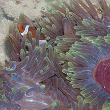
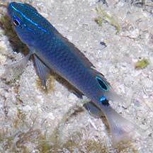
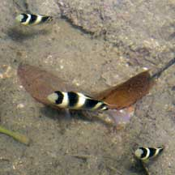
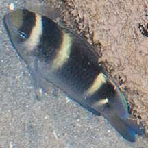
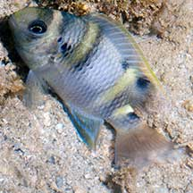

| Phylum Chordata
> Subphylum Vertebrata > fishes |
Damselfishes
Family Pomacentridae
updated
Sep 2020
Where
seen? Damselfishes
such as the anemonefishes are sometimes seen on our intertidal shores. But most
damselfishes live in deeper waters and are more frequently encountered
by divers.
What are damselfishes? They belong
to Family Pomacentridae. According to FishBase:
the family has 28 genera and 321 species. They are mainly found in
the Indo-Pacific oceans, some are found in brackish waters. Anemonefishes
(made famous by the cartoon 'Nemo') are among the better known members
of this family.
Features: Damselfishes vary widely
in size, colour and shape. Some species can grow to 35cm, others are
1cm or smaller. Those that eat algae tend to be duller while plankton-feeders
tend to be more colourful. |

Clown anemonfish in a Magnificent anemone.
Terumbu Semakau, Jul 14 |

Juvenile damselfishes can look
very different from the adults.
Tanah Merah, Nov 10 |

Damselfishes can be abundant
on some of our shores!
Raffles Lighthouse,
Jul 06 |
What do they eat? As a family,
they eat a wide variety of things. Plankton-feeding damselfishes are
believed to play an important role in reefs as they occur in such
huge numbers that they effectively filter the currents. Damselfishes
that feed on algae are often aggressively territorial, defending their
feeding area from all intruders. These tiny damselfishes will vigorously
harass larger fishes and even divers.
According to Jeffrey Low on the Singapore Biodiversity Records: The sergeant damselfishes commonly seen on our shores have overlapping habitat and feeding requirements. The Bengal sergeant occurs singly or in small groups in inshore and lagoon coral reefs at depths of 1-6 m. It feeds on seaweed, snails and small crabs, and is highly territorial. The Scissortail sergeant lives on coral or rocky reefs, and also in shallow reef flats or crests, at depths of 1-20 m, usually where tall soft coral or hydroid colonies are present. It often forms groups at midwater, high in the water column to feed on zooplankton and algae. The Indo-pacific sergeant lives in the upper edge of outer reef slopes and inshore rocky reefs at depths of 1-15 m. Although tending feed on the bottom, eating algae and small invertebrates, it often forms groups in midwater to feed on zooplankton.
Damsel babies: In many species,
a nest site is prepared by one or both partners. The eggs are attached
by adhesive threads to the site and the male usually guards them until
they hatch into free-swimming larvae.
Human uses: Many members of this
family are harvested from the wild for the live aquarium trade. Harvesting
tropical scorpionfishes for the live aquarium trade may involve the
use of cyanide or blasting, which damage the habitat and kill many
other creatures. Like other fish and creatures harvested for the live
aquarium trade, most die before they can reach the retailers. Without
professional care, most die soon after they are sold. Those that do
survive are unlikely to breed successfully.
Status and threats: Anemonefishes of the Family Pomacentridae are listed among the threatened animals
of Singapore. Like other creatures of the intertidal zone, they are
affected by human activities such as reclamation and pollution. Overcollection
by hobbyists and overfishing can also have an impact on local populations. |
| Some Damselfishes
on Singapore shores |
|
|
|
|
5-7
narrow bars black (sometimes grey) across a yellowish-green body. Tail with
rounded lobes, no horizontal black stripes.
|
4-5 broad black bars across a yellowish body. Tail fins have lobes with pointed
tips and black horizontal stripes so they resemble scissors. |
6
dark or grey bars on white body. A prominent black spot at the top
of the tail just before the tail fin. |
|
|
|
|
|
|
|
| 4 yellow bars on variably coloured body with variable other spots. Juveniles look very different from adults. |
|
|

Adult |

Adult |
|
|
|
|
|
|
|
| Juvenile with 2 broad honey brown
bars on a white body, one through the eyes, and another in the middle of the body,
a large gold-margined black spot on the dorsal fin. |
|
|
Family
Pomacentridae recorded for Singapore
from
Wee Y.C. and Peter K. L. Ng. 1994. A First Look at Biodiversity
in Singapore.
*additions from from Ng, P. K. L. & Y. C. Wee, 1994. The Singapore
Red Data Book: Threatened Plants and Animals of Singapore.
in red are those listed among the threatened animals of Singapore
from Davison, G.W. H. and P. K. L. Ng and Ho Hua Chew,
2008. The Singapore Red Data Book: Threatened plants and animals of
Singapore.
**from WORMS
+Other additions (Singapore Biodiversity Records, etc)
| |
Family
Pomacentridae
Sergeant majors |
| |
Abudefduf
bengalensis (Bengal sergeant)
Abudefduf melas=**Neoglyphidodon melas
*Abudefduf notatus (Yellowtail sergeant)
Abudefduf plagiometopon=**Hemiglyphidodon plagiometopon
Abudefduf saxatillis
*Abudefduf sordidus (Black-spot
sergeant)
Abudefduf sexfasciatus (Scissortail
sergeant)
Abudefduf vaigiensis (Indo-Pacific
sergeant) |
| |
Amphiprion spp. (Clown
anemonefishes) with list of species recorded for Singapore |
| |
*Amblyglyphidodon
curacao (Staghorn damsel)
*Amblyglyphidodon leucogaster
Chromis analis
Chromis atripectoralis
Chromis cinerascens
*Chromis xanthurus
+Chrysiptera parasema (Goldtail damselfish)
+Dascyllus reticulatus
Dascyllus trimaculatus (Threespot
dascyllus)
Dischistodus chrysopoecilus (Pale-spot damsel)
Dischistodus fasciatus (Yellow-banded
damsel)
*Dischistodus melanotus
*Dischistodus perpicillatus (White damsel)
Dischistodus prosopotaenia
(Honey-head damsel)
Eupomacentrus apicalis=**Stegastes apicalis
Hemiglyphidodon plagiometopon
+Neoglyphidodon nigroris (Behn’s damselfish)
+Neopomacentrus anabatoides (Silver demoiselle)
+Neopomacentrus bankieri (Chinese demoiselle)
+Neopomacentrus cyanomos (Regal demoiselle)
Neopomacentrus filamentosus (Brown demoiselle)
Neopomacentrus nemurus
*Neopomacentrus violascens
Paraglyphidodon nigroris=**Neoglyphidodon nigroris
Pomacentrus albimaculus
Pomacentrus alexanderae
Pomacentrus amboinensis
*Pomacentrus breviceps
*Pomacentrus brachialis
Pomacentrus
cuneatus (Wedgespot damsel)
+Pomacentrus cheraphilus
(Silty damsel)
Pomacentrus chyrysopoecilus=**Dischistodus chrysopoecilus
Pomacentrus fasciatus=**Dischistodus fasciatus
Pomacentrus grammorhynchus
Pomacentrus littoralis (Smoky damselfish)
Pomacentrus melanopterus=**Pomacentrus brachialis
+Pomacentrus moluccensis (Lemon damsel)
Pomacentrus notophthalmus=**Dischistodus melanotus
Pomacentrus popei=**Pomacentrus moluccensis
Pomacentrus pristiger=**Stegastes limbatus
Pomacentrus prosoptaenia=**Dischistodus prosopotaenia
Pomacentrus rhodonotus=**Pomacentrus chrysurus
*Pomacentrus richardsoni=**Pomachromis richardsoni
+Pomacentrus simsiang
Pomacentrus taeniurus=**Neopomacentrus taeniurus
Pomacentrus tripunctatus (Threespot
damsel)
Pomacentrus violascens=**Neopomacentrus violascens
Pomacentrus xanthus=**Stegastes variabilis
*Pritotis jerdoni=**Pristotis obtusirostris
*Stegastes apicalis
*Stegastes lividus
+Stegastes obreptus
|
|
Links
References
- Daisuke Taira. 30 October 2020. A goldtail damselfish, Chrysiptera parasema, at Pulau Hantu. Singapore Biodiversity Records 2020: 170. The National University of Singapore.
- Daisuke Taira & Amanda Rouwen Hsiung. 31 August 2020. The silty damselfish, Pomacentrus cheraphilus, in Singapore. Singapore Biodiversity Records 2020: 119-120 ISSN 2345-7597
- Daisuke Taira. 22 January 2020. The blueback damselfish, Pomacentrus simsiang, in Singapore. Jovena Chun Ling Seah & Aaron Teo, Singapore Biodiversity Records 2020: 1 ISSN 2345-7597, National University of Singapore
- Jeffrey K. Y. Low. Staghorn damselfish in the Singapore Strait. 21 December 2018. Singapore Biodiversity Records 2018: 134 ISSN 2345-7597. National University of Singapore.
- Daisuke Taira. White damselfish in the Singapore Strait. 31 October 2018. Singapore Biodiversity Records 2018: 118 ISSN 2345-7597. National University of Singapore.
- Daisuke Taira. A Singapore record of the yellowtail sergeant, Abudefduf notatus. 31 October 2018. Singapore Biodiversity Records 2018: 115 ISSN 2345-7597. National University of Singapore.
- Jeffrey K. Y. Low. Three species of sergeant damselfishes off Pulau Satumu. 30 November 2017. Singapore Biodiversity Records 2017: 167-168 ISSN 2345-7597. National University of Singapore.
- Daisuke Taira. 30 Jun 2017. Western gregory, Stegastes obreptus, at Sultan Shoal. Singapore Biodiversity Records 2017: 75.
- Tan Heok Hui & Kelvin K. P. Lim. 30 Jun 2017. Regal demoiselles, Neopomacentrus cyanomos, in Sisters Islands Marine Park. Singapore Biodiversity Records 2017: 76.
- Jeffrey K. Y. Low
. 30 Sep 2016. Behn’s damselfish in the Singapore Strait. Neoglyphidodon nigroris. Singapore Biodiversity Records 2016: 119.
- Jeffrey K. Y. Low. 30 June 2016. New record of reticulated dascyllus in Singapore Dascyllus reticulatus (Teleostei: Pomacentridae). Singapore Biodiversity Records 2016: 77.
- Jeffrey K. Y. Low. 21 August 2015. Smoky damselfish off Pulau Satumu. Singapore Biodiversity Records 2015: 115
- Kelvin K. P. Lim. 8 August 014. Silver demoiselle in the Singapore Straits, Neopomacentrus anabatoides. Singapore Biodiversity Records 2014: 216.
- Toh Chay Hoon. 11 April 2014. Spawn of the saddleback anemonefish. Singapore Biodiversity Records 2014: 96
- Toh Chay Hoon & Kelvin K. P. Lim
. 14 March 2014. Aggregation of two species of demoiselle fishes at Pulau Hantu. Singapore Biodiversity Records 2014: 7
- Jeffrey K. Y. Low. 2013. More noteworthy fishes observed in the Singapore Straits. Nature in Singapore, 6: 31–37.
- Jeffrey Low J.K.Y., Randall, J.E. and Chou, L.M. New localities for the wedge-spot damselfish, Pomacentrus cuneatus Allen, 1991 (Teleostei: Pomacentridae) in Southeast Asia. Raffles Bulletin of Zoology 43(1):45-50.
- Wee Y.C.
and Peter K. L. Ng. 1994. A First Look at Biodiversity in Singapore.
National Council on the Environment. 163pp.
- Davison,
G.W. H. and P. K. L. Ng and Ho Hua Chew, 2008. The Singapore
Red Data Book: Threatened plants and animals of Singapore.
Nature Society (Singapore). 285 pp.
- Allen, Gerry,
2000. Marine
Fishes of South-East Asia: A Field Guide for Anglers and Divers.
Periplus Editions. 292 pp.
- Kuiter, Rudie
H. 2002. Guide
to Sea Fishes of Australia: A Comprehensive Reference for Divers
& Fishermen
New Holland Publishers. 434pp.
- Lieske,
Ewald and Robert Myers. 2001. Coral
Reef Fishes of the World
Periplus Editions. 400pp.
- Lim, S.,
P. Ng, L. Tan, & W. Y. Chin, 1994. Rhythm of the Sea: The Life
and Times of Labrador Beach. Division of Biology, School of
Science, Nanyang Technological University & Department of Zoology,
the National University of Singapore. 160 pp.
|
|
|